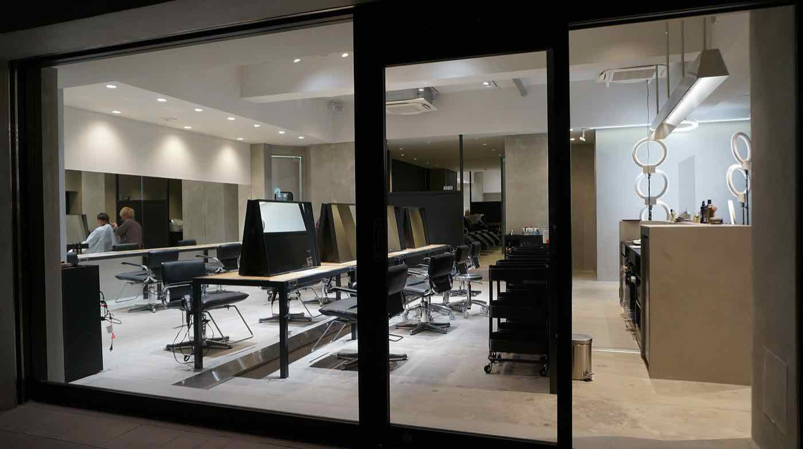

Bugün ne yapalım?
Bir hizmete dokunun, WhatsApp'ta randevu mesajınız hazır açılsın.
- Kesim & fönYüz hattınıza göre kesim, dalgalı ya da düz fönRandevu →
- Saç boyamaDip boya, tam boya, renk değişimiRandevu →
- Röfle & balyajIşıltılı geçişler, doğal tonlarRandevu →
- Saç bakımıYıpranmış saçlar için bakımRandevu →
- Gelin & nişan saçıÖzel gününüz için topuz ve modellerBilgi al →
- Özel günMezuniyet, kına, davetRandevu →
Örnek hizmet listesi ve örnek fotoğraflardır; kendi hizmetleriniz, fiyatlarınız ve salonunuzun fotoğraflarıyla güncellenir.
Aynadan yansıyanlar



Telefon0543 230 25 33
Adres
Adresiniz buraya eklenecek · haritada ara
Çalışma saatleri
Saatleriniz buraya eklenecek